Hands-Free Speaker Is Inoperative
1. Before you begin, run the Components Check described in this bulletin and verify the problem.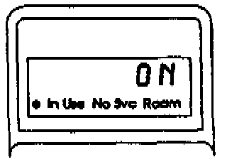
2. Turn the ignition switch to I (Accessory). Then, turn the phone on and verify that it's unlocked. The handset display should read ON and stay ON throughout this test.
3. Verify the speaker problem by pressing keys on the handset and listening for tones. (You should also have heard a tone when you turned the phone on.)
4. With the handset, enter the programming mode at the Number Assignment Module (NAM) by pressing Fcn +0+6-digit security code + repeat the 6-digit security code + Rcl. (Refer to the programming instructions on the last page of this bulletin.)
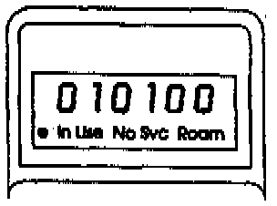
5. Scroll to step 10 by holding down the * key. Does step 10 display "010100?"
Yes- Go to step 7.
No - Enter "010100". Hold down the * key until "01" appears in the display, then press the "Send" key. Go to the next step.
6. Press the keys on the handset and listen for the tones. Can you hear the tones through the speaker?
Yes - The hands free speaker function is OK.[ ]
No - Go to the next step.
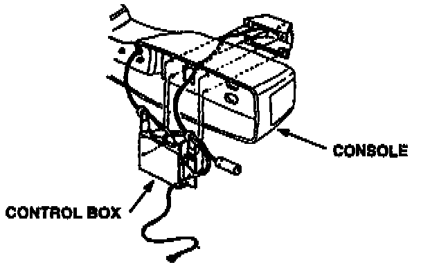
7. Remove the center console panel to reach the connectors on the control box.
8. Exit the programming mode by pressing CLR. Then, turn on the car radio to verify there is radio sound at the passenger door speaker and right dash tweeter.
Is there radio sound at the speaker and tweeter?
Yes - Go to step 13.
No - Go to the next step.
9. Set the DVOM to ohms, disconnect the 7-P connector from the control box, and check resistance between terminals 2 and 3.
Is there about 4.5 ohms of resistance?
Yes - Go to step 12.
No - Go to the next step.
10. Remove and disconnect the passenger door speaker and the right dash tweeter.
11. Measure resistance between the positive (+) and negative (-) posts of both the speaker and tweeter.
Note:
To avoid damaging the audio system amplifier, do not connect the DVOM until the speaker and tweeter are disconnected from the audio system.
Is there about 4.5 ohms of resistance in the speaker and the tweeter?
Yes - Repair open or shorted wire(s) from the control box to speaker and/or tweeter.[ ]
No - Replace the speaker and/or tweeter.[ ]
The "[ ]" symbol indicates the end of troubleshooting for this symptom.
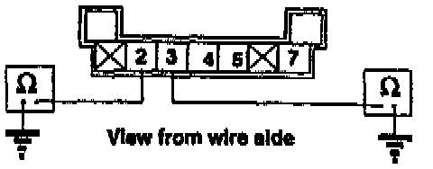
12. At the control box 7-pin connector, check resistance between terminal 2 and ground, and terminal 3 and ground.
Is there continuity?
Yes - Repair short to ground from control box to right-front speaker and/or dash tweeter.[ ]
No - Replace control box.[ ]
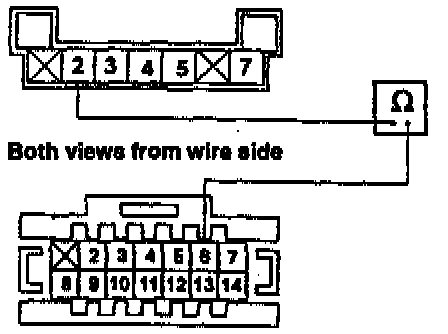
13. Reconnect the 7-P connector to the control box. Then, with the phone on, backprobe to check continuity between terminal 2 of the 7-P connector and terminal 6 of the 14-P connector while pressing any key on the handset
Is there continuity for about 4 seconds after you release the handset key?
Yes - Go to the next step.
No - Replace the control box.[ ]
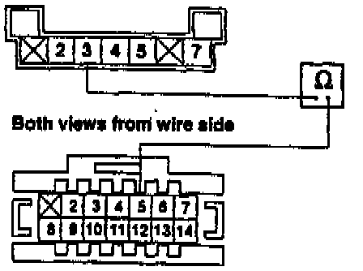
14. With the phone still on, backprobe to check continuity between terminal 3 of the 7-P connector and terminal 5 of the 14-P connector while pressing any key on the handset.
Is there continuity for about 4 seconds after you release the handset key?
Yes - Go to the next step.
No - Replace the control box.[ ]
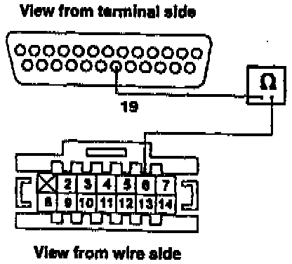
15. Turn the phone off and disconnect the 25-P connector from the transceiver and the 14-P connector from the control box. Check for continuity between terminal 19 of the 25-P connector and terminal 6 of the 14-P connector.
Is there continuity?
Yes - Go to step 18.
No - Go to next step.
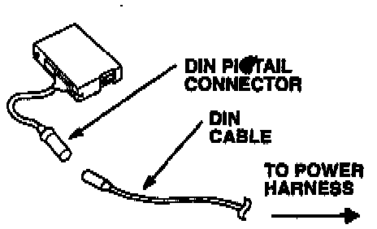
16. Disconnect the 13-P DIN cable between the DIN pigtail hamess (on the control box) and the DIN connector on the power harness.
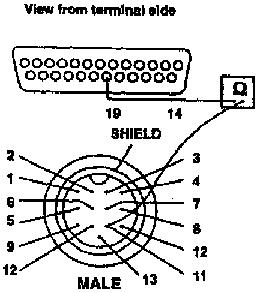
17. Check for continuity between terminal 11 of the DIN power cable connector and terminal 19 of the 25-P transceiver connector.
Is there continuity?
Yes - Go to the next step.
No - Replace the transceiver (power) harness. (Combination DIN cable and power line.[ ]
The "[ ]" symbol indicates the end of troubleshooting for this symptom.
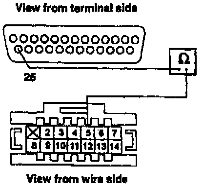
18. Check for continuity between terminal 25 of the 25-P connector and terminal 5 of the 14-P connector.
Is there continuity?
Yes - Go the next step.
No - Repair open in the wire from the 25-P connector to the 14-P connector.[ ]
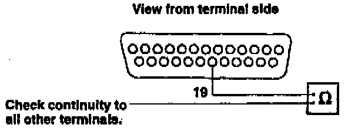
19. Check for continuity between terminal 19 of the 25-P connector and all the other terminals.
Is there continuity?
Yes - Go to the next step.
No - Replace the transceiver.[ ]
20. Disconnect the 13-P DIN pigtail harness from the control box, then repeat step 19.
Is there continuity?
Yes - Go to the next step.
No - Replace the control box and pigtail harness. (Harness is not available separately.[]
21. Disconnect the other end of the DIN cable between the pigtail harness and the DIN connector on the power harness. Repeat step 19.
Is there continuity?
Yes - Replace the power harness. (Combination DIN cable connector and power wire.)[ ]
No - Replace the transceiver.[ ]
The "[ ]" symbol indicates the end of troubleshooting for this symptom.